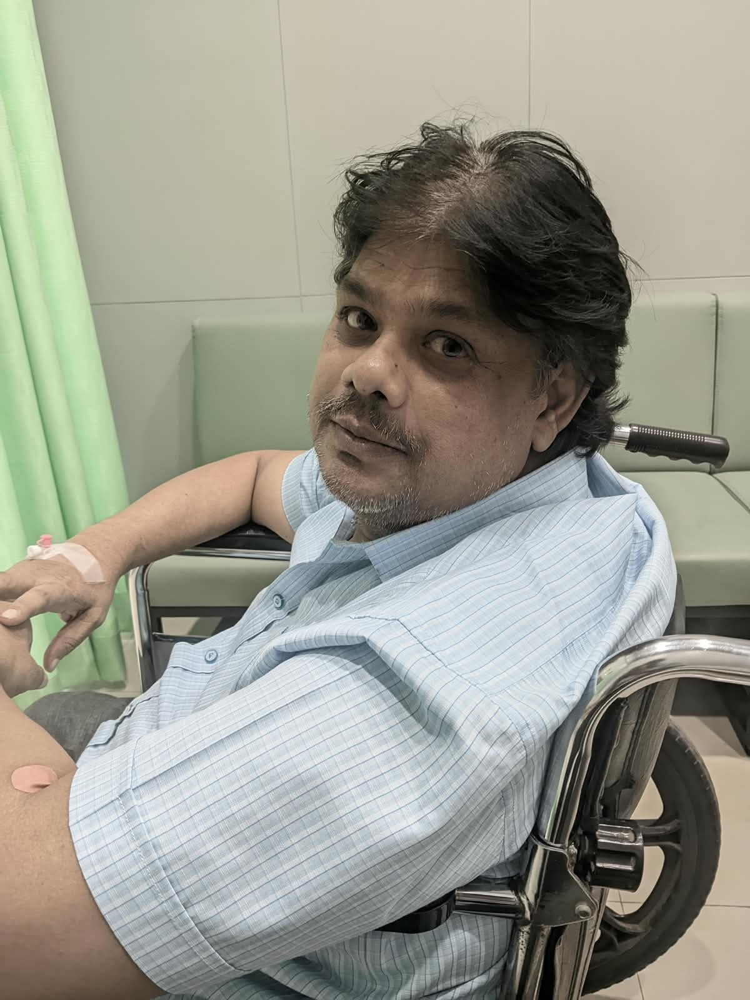

Supporting Shardanand's Fight Against Cancer
A loving father, a dedicated teacher, and the pillar of our family, Shardanand Das, has recently been diagnosed with Stage 4 Cancer. We are rallying together to support his intensive treatment plan.

His Journey & Our Family
A Life of Teaching
For 28 years, my father has dedicated his life to teaching at Maryknoll Bowman Birla Irani Educational Academy School,
touching the lives of thousands of students along the way. Many of those students have gone on to achieve great things
across India and around the world, yet they still remember the teacher who believed in them and supported them.
Even when he faced his own medical struggles, he continued teaching beyond the classroom often welcoming students
to learn from him, teaching them additional subjects even after the school in evenings and weekends at even his home,
and helping them simply because they wanted to learn. What made him special was that he never taught only from a textbook;
he taught life lessons, connected with students by becoming a student himself, and made learning something they could
truly enjoy and understand. Even decades later, former students still remember him, send him their wedding invitations,
stay in touch, and speak of him as one of the greatest teachers they have ever had. For them, he was not just a teacher
but a mentor, a guide, and a lasting part of their lives.
A History of Strength
My father's life has been a story of resilience.
Throughout his nearly 28 years of teaching, he faced repeated health challenges while
continuing to fulfil his responsibilities and stand by his students. In 2010, he developed
a serious thyroid condition that affected his ability to speak. In 2011, he underwent surgery
for severe gallbladder problems, but just days later, he suffered a paralysis attack that caused
lasting weakness on his right side. He spent years seeking treatment in different places and
eventually found some relief through Ayurveda. In 2020, another fall left him with a fractured thumb,
a leg injury, and a serious back injury, followed by another paralysis attack that severely affected
his mobility. In 2022, he suffered a heart attack and underwent angioplasty, with two stents placed
in his heart. Over time, his health deteriorated to the point where he became completely dependent on a wheelchair.
Yet through every setback, he kept going. He never allowed his own struggles to make him abandon his responsibilities
or the people who depended on him. Even after everything he had endured, he continued trying to live and work with dignity.
Today, after surviving years of medical challenges, he is facing perhaps his greatest battle yet: cancer.
This diagnosis has left him physically and emotionally exhausted, but the same strength that carried him through
every previous struggle is what gives us hope that he can face this one too.
The Heart of Our Home
For our family, my father has always been far more than a
teacher or a provider—he has been the heart of our home. His presence, guidance, and strength have
been a constant source of support for all of us, even during the years when his own health was deteriorating.
Despite everything he went through, he continued to put his responsibilities and the people around him before
his own suffering.
Today, our family is facing a reality we never imagined. Years of medical treatment and repeated health complications have taken
an enormous toll, and our financial resources have been stretched beyond what we can manage. We live in a rented home, and as my
father explains in his own words, there is essentially nothing left financially to fall back on. After spending his entire life
giving to his students and his community, he now finds himself in a position where he needs the support of that very community.
For nearly three decades, he gave his knowledge, guidance, and care to thousands of students without ever expecting anything in
return. Today, we are reaching out with a simple hope: that the people whose lives he touched, along with those who believe in
helping a family through its darkest moment, will stand beside him. This fight is not only about treating his cancer—it is about
giving the man who spent his life helping others a chance to receive the help he now desperately needs.
]
Current Medical Situation
My father is now facing his most serious medical battle yet. He has been diagnosed with Stage 4 Renal Cell Carcinoma (RCC), a form of advanced kidney cancer. At this stage, the disease is considered incurable, and our doctors have explained that the goal of treatment is to control the cancer, slow its progression, and give him the opportunity to continue living for as long as possible with the best quality of life achievable. After everything he has already endured multiple health complications, paralysis, a heart attack, major surgeries, and years of declining mobility this diagnosis has been devastating for our family. According to his treating doctors, conventional chemotherapy is not the appropriate treatment for his particular cancer. The recommended course is immunotherapy, a treatment that helps the body's immune system recognize and fight cancer cells. Immunotherapy-based treatments are among the established treatment approaches for advanced renal cell carcinoma.
The treatment, however, is extremely expensive, and our family does not have the financial means to sustain the costs on our own. Starting treatment as advised by his doctors is now urgent. Without effective treatment, the cancer can continue to progress and may lead to further complications and medical emergencies, bringing additional suffering and financial burden to our family.
For nearly three decades, my father gave everything he had to his students and to the community around him. Today, we are asking for help so that he can receive the treatment his doctors have recommended. We cannot change the diagnosis, but with timely treatment and the support of those around us, we hope to give him more time, more moments with his family, and a chance to continue his journey.